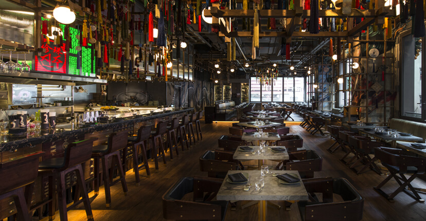

媽咪佳肋比 Mom's Kalbi
100% 歡樂、有趣、新奇、流行的狂爆威力。
近幾年來因韓劇當紅，不僅引起一股追韓星風潮外，劇中男女主角無論是服裝、餐廳的場景或是餐點的內容，都是消費者模仿及嚐鮮的指標。 在餐飲市場經營有成的展圓餐飲集團，看準了這股商機，多次前往韓國考察後，以道地韓式料理精神聘請專業韓式主廚，正式於2015年6月開幕K-BOOM (K棒韓式料理)台灣第一號店於台北正式登場，除了餐飲外，也結合韓國炸彈飲料文化，希望像炸彈爆炸的威力一樣，引領台灣的韓流餐飲。
全方位的餐點選擇 有氣質的回魂辣度
為了營造用餐的特有迷人氛圍，在K-BOOM(K棒韓式料理)以K-STYLE為指標，無時差的提供當紅的韓流明星商品，讓消費者不需出國也能感受到韓星偶像魅力，也特別提供獨家販售偶像周邊商品與原裝韓國商品。
最值得一提的是:為滿足消費者愛自拍，特別進口趣味道具”語不驚人死不休”的圍裙，讓客人自拍分享，一個好吃又好玩的地方，您怎能錯過?
韓式風味燒烤，美味暢食首選
「東大門韓式燒烤暢食料理館」為目前全台最大的韓式自助燒烤餐廳，佔地五百多坪的韓風時尚裝潢，配上韓式美食，創造與韓國同步流行的料理，廚藝精湛的料理團隊，製作出豐富可口、精緻優良的韓國料理，店內除了提供各種適合韓國烤肉的肉品海鮮之外，現場每天提供近上百種的餐點，例：石鍋拌飯、人蔘雞、豆腐鍋、辣炒年糕、韓式炸雞、煎餅、甜點、飲品、水果、名牌冰品等各式佳餚，通通都無限量供應，為提供色香味俱全的正統韓式料理，部分料理採現點現做方式，嚴選優質適合烤肉的肉品，從整塊原肉現切的肉片到醃漬肉片，搭配上特製的醬料及泡菜再放入生菜葉中捲起來吃，是最具韓味的烤肉吃法，也深受高雄區消費者的喜愛，是喜愛大口吃肉，暢食到底的朋友們最經濟實惠的選擇，希望來到這裡用餐的顧客們都能有物超所值的幸福感！